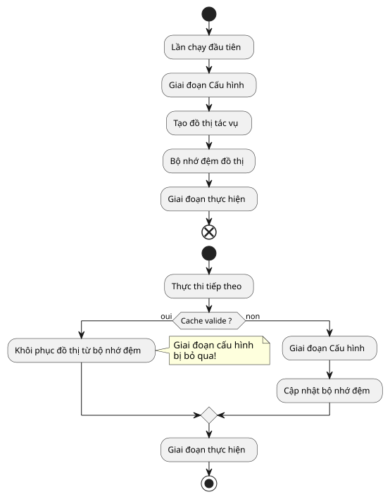

Bài 4: Cạm bẫy của Gradle Configuration Cache
Đăng ngày 26 September 2025
Giới thiệu
Trong hành trình tạo plugin của chúng ta`site-baker`, chúng tôi đã tuân theo một cách tiếp cận TDD nghiêm ngặt. Mỗi tính năng đều được kiểm thử, xác thực, và chúng tôi tiến bước với sự tự tin. Rồi một ngày, điều không lường trước đã xảy ra. Các bản build bắt đầu hoạt động một cách thất thường. Những thay đổi trong logic của plugin hoặc trong các tệp cấu hình dường như bị bỏ qua, và các bài kiểm thử chức năng của chúng tôi, trước đây vốn đáng tin cậy, lại thất bại mà không có lý do rõ ràng.
Loại vấn đề này có thể vô cùng bực bội. Nó khiến người ta đặt câu hỏi về độ tin cậy của công cụ và tính hợp lệ của mã của chúng ta. Sau một phiên gỡ lỗi căng thẳng, thủ phạm đã được xác định:bộ nhớ đệm cấu hình của Gradle.
Triệu chứng: Những bản build ma
Vấn đề biểu hiện theo nhiều cách:
-
Tôi đang sửa đổi một chuỗi ký tự trong một tác vụ`println`, nhưng chuỗi cũ vẫn tiếp tục hiển thị khi thực thi.
-
Tôi đang thay đổi một giá trị trong tệp của mình`managed-jbake-context.yml`, nhưng plugin lại hoạt động như thể tệp chưa được sửa đổi.
-
Các bài kiểm thử chức năng, vốn tạo các dự án kiểm thử ngay tức thì, đã thất bại vì plugin dường như không phát hiện ra các tệp cấu hình vừa mới được tạo.
Mọi thứ diễn ra như thể Gradle đang chạy một "phiên bản ma" của bản dựng của chúng tôi, phớt lờ những thay đổi gần đây nhất của chúng tôi.
Cuộc điều tra: Bộ nhớ đệm Cấu hình là gì?
Cache cấu hình là một tính năng tương đối hiện đại và cực kỳ mạnh mẽ của Gradle, được bật theo mặc định trong các phiên bản mới. Mục tiêu của nó là giúp các bản build nhanh hơn.
-
Trong lần thực thi đầu tiên, Gradle thực hiện giai đoạn củaCấu hình(đọc các`build.gradle.kts`, việc tạo tác vụ, giải quyết các phụ thuộc) và xây dựng một đồ thị tác vụ.
-
Vào cuối giai đoạn này, GradleTuần tự hóa đồ thị tác vụ nàyvà lưu nó vào bộ nhớ đệm.
-
Trong các lần thực thi tiếp theo, nếu không có gì thay đổi (các script build,
gradle.properties, v.v.), GradleBỏ qua hoàn toàn giai đoạn cấu hìnhvà tái sử dụng đồ thị tác vụ đã được lưu trong bộ nhớ đệm.
Việc tiết kiệm thời gian là rất ấn tượng trên các dự án lớn. Tuy nhiên, hiệu năng này có một cái giá: nó áp đặt các quy tắc nghiêm ngặt về cách viết các plugin.

Nguyên nhân của Vấn đề: Một Plugin Không Tuân thủ
Plugin của chúng tôi`site-baker`đã vi phạm, mà không hề biết, nhiều quy tắc của bộ nhớ đệm cấu hình. Để một đồ thị tác vụ có thể tuần tự hóa, các tác vụ không được chứa tham chiếu đến các đối tượng phức tạp như đối tượng`Project`hoặc đọc các tệp một cách tùy ý trong giai đoạn thực thi.
Lỗi chính của chúng tôi là đọc nội dung tệp YAML trực tiếp bên trong logic thực thi của tác vụ, bằng cách sử dụng tham chiếu đến đường dẫn được lưu trữ trong tiện ích mở rộng của chúng tôi. Cách tiếp cận này không tương thích với bộ nhớ đệm vì Gradle không thể biết liệu nội dung tệp có thay đổi hay không nếu việc đọc này không được mô hình hóa như mộtđầu vào tác vụ(Đầu vào tác vụ).
Giải pháp tạm thời: Vô hiệu hóa bộ nhớ đệm
Để gỡ bí và lấy lại hành vi build có thể dự đoán được, giải pháp nhanh nhất là tắt cache cấu hình. Chỉ cần thêm dòng sau vào tệp`gradle.properties`của dự án sử dụng plugin (hoặc trong trường hợp của chúng tôi, dự án kiểm thử`site-baker`).
# site-baker/gradle.properties
org.gradle.configuration-cache=falseNgay lập tức, các bản build đã trở lại hành vi bình thường. Mỗi lần chạy đều khởi động lại giai đoạn cấu hình và các thay đổi của chúng tôi đã được tính đến.
Tuy nhiên, đây là một giải pháp tạm thời, không phải là giải pháp bền vững. Nó đánh đổi hiệu năng và không giải quyết được vấn đề cốt lõi của plugin chúng ta.
Giải pháp thực sự: Làm cho plugin tương thích
Để một plugin trở thành một công dân tốt của hệ sinh thái Gradle hiện đại, nó phải tương thích với cache cấu hình. Điều này ngụ ý phải suy nghĩ lại cách dữ liệu truyền đến các tác vụ của chúng ta.
Điều quan trọng là sử dụng cácAPI của nhà cung cấpcủa Gradle. Thay vì truyền các giá trị trực tiếp (như một`String` ou un File) cho các nhiệm vụ của chúng ta, chúng ta phải dành những`Property<T>`hoặc những`Provider<T>`.
-
Khai báo các đầu vào của tác vụ:Tác vụ phân tích cú pháp tệp YAML phải khai báo tệp này là một đầu vào. Để làm điều này, người ta sử dụng chú thích`@InputFile`.
[source,kotlin] ---- @get:InputFile abstract val configFile: RegularFileProperty ----
-
Sử dụng
PropertyvàProvider:Giá trị của`configFile`sẽ được kết nối với thuộc tính`configPath`của phần mở rộng DSL của chúng tôi. Nhờ vậy, Gradle có thể truy vết nguồn gốc của dữ liệu.
[source,kotlin] ---- // Trong plugin tasks.register<MyTask>("myTask") { configFile.set(extension.configPath.flatMap { project.layout.projectDirectory.file(it) }) } ----
-
Đọc nội dung vào đúng thời điểm:Việc đọc tệp phải được thực hiện bên trong hành động của tác vụ (
@TaskAction), bằng cách sử dụng`Provider`của lối vào.
[source,kotlin] ---- @TaskAction fun execute() { val content = configFile.get().asFile.readText() // … phân tích cú pháp nội dung } ----
Theo mô hình này, Gradle hiểu rằng nếu nội dung của`configFile`thay đổi, bộ nhớ đệm cấu hình không hợp lệ và giai đoạn cấu hình phải được thực thi lại. Ngoài ra, nó biết rằng đầu ra của tác vụ phụ thuộc vào nội dung của tệp này, điều này cũng cho phép tối ưu hóa bộ nhớ đệm thực thi (UP-TO-DATE).
Kết luận
Cuộc phiêu lưu gỡ lỗi này đã là một bài học quý giá. Hành vi "kỳ diệu" của bộ nhớ đệm cấu hình đã buộc chúng ta phải hiểu rõ hơn vòng đời của Gradle và các nguyên tắc của lập trình khai báo và lười (lazy).
Tắt bộ nhớ đệm cấu hình là một công cụ chẩn đoán hữu ích, nhưng giải pháp thực sự là thiết kế các plugin mạnh mẽ và hiện đại. Bằng cách mô hình hóa đúng đầu vào và đầu ra của các tác vụ của chúng ta với các API`Provider`, chúng tôi không chỉ sửa một lỗi mà còn cải thiện hiệu suất, độ tin cậy và khả năng bảo trì của plugin của chúng tôi.
Trong bài viết tiếp theo, chúng ta sẽ đưa refactoring này vào thực tiễn để làm cho tác vụ parsing YAML của chúng ta hoàn toàn tương thích với cache cấu hình.